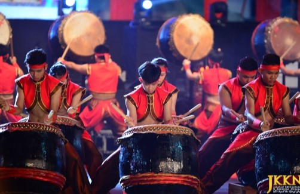

a combination of musical performances, singing, dancing and jokes that are influenced by the Middle East.
The lyrics are in Arabic or Malay. The word 'Party' means 'festivity of ghazal performance'.
This art developed in the northern states of the peninsula.
presented in wedding ceremonies and in official ceremonies.
Kampang
the most popular traditional musical instrument among the Malay community.
made from >goat skin
Beduan
the oldest art performance in the state of Perlis.
Beduan group members consist of 10 to 12 people.
There are three types of drums that are used, which are Mother Drums, Birth Drums and Child Drums.
Henna Drum
became known as 'Gendang Keling'
Perlis Chief Minister at the time the late Dato' Jaafar Hasan announced the change of the name of 'Gendang Keling' to 'Gendang Terinai'.
li>
popular once upon a time among the people up to the palace.
Hadrah
the art of drumming music that comes from Arab lands, especially Persia.
which is in the state of Perlis is actually the same as Hadrah in the state of Kedah because once upon a time Perlis was under the rule of Kubang Pasu Darul Kiam.
very popular in Perlis and Kedah since entering the 17th century. often performed in wedding ceremonies that take up to a day and night.
Silver Tambourine
comes from two Arabic words which are 'Rab' meaning 'beat' and 'Na' meaning 'we'.
tambourine means 'our beat'. Paluan Rebana Perak is led by a player followed by an interlude and a hammer.
often played at weddings, circumcisions, piercings, as well as events to welcome guests of honor and also parades.
Sape
traditional harp of the Orang Ulu community of Sarawak, traditionally used by the Kenyah, Kayan and Kelabit tribes.
In the past it was only played during medical ceremonies in long houses, but gradually became a social tool used as a form of entertainment.
24 Season Hack

It is a drum performance that combines twenty-four solar terms, calligraphy and the Guangdong lion drum.
Invented in 1988 by Chinese Malaysians Chen Huichong and Chen Zaifan.
Became a Malaysian National Heritage Project in 2009. enriched and updated based on traditional Chinese drums.
It is a symbol of Chinese cultural heritage in Southeast Asia.
Teo Chew Traditional Chinese Orchestra
Was established in 1984 starting at Jonker Street Melaka.
Is a non-profit Traditional Chinese Instrumental Orchestra.
The purpose of establishing this group is to present healthy activities and the uniqueness of traditional art in Chinese society while appreciating the beauty of traditional music.